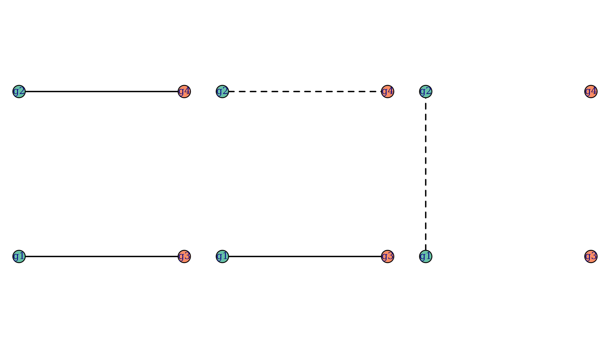
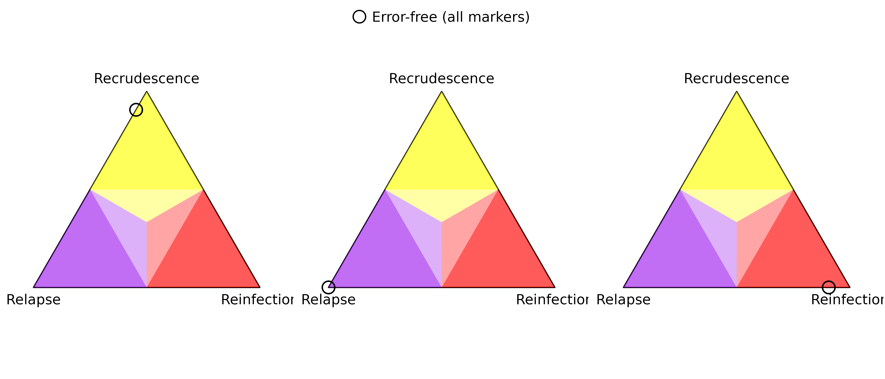
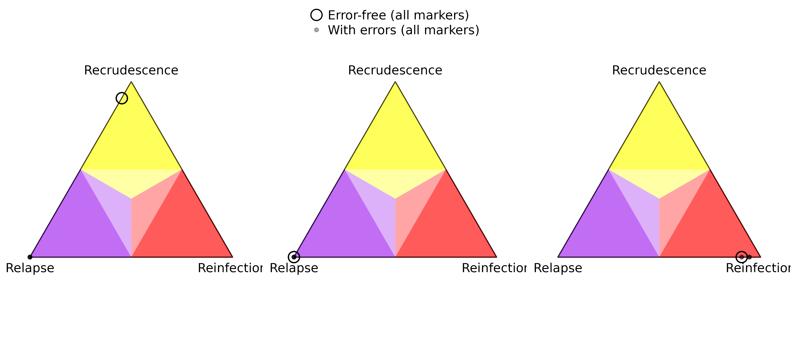
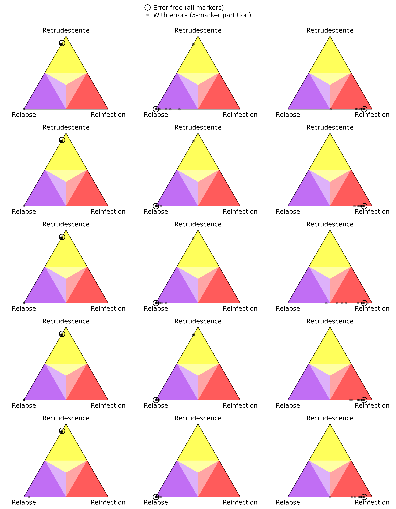
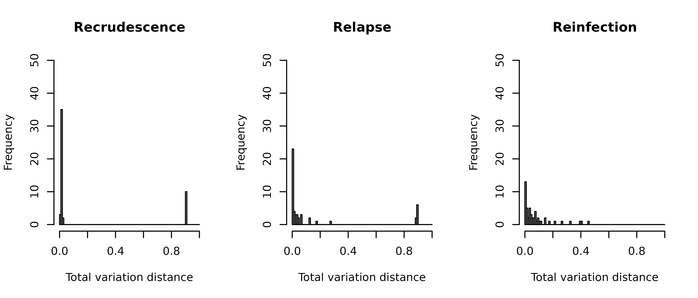
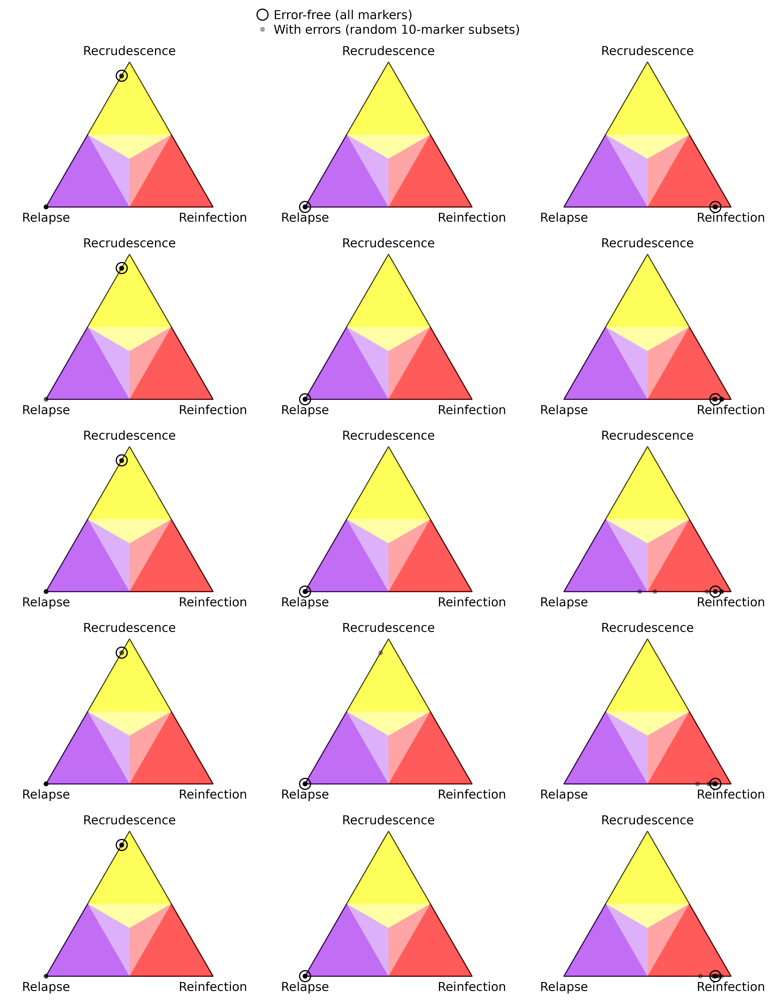

Marker sensitivity analysis for model misspecification
Source:vignettes/articles/sensitivity-analysis.Rmd
sensitivity-analysis.RmdIntroduction
The statistical model used by Pv3Rs does not perfectly capture the data-generating process in reality. In this article, we demonstrate how marker sensitivity analysis can help address misspecifications arising from genotyping errors and de novo mutations, which are not accounted for by the Pv3Rs model.
We distinguish three types of misspecifications:
False negatives. The genotyping procedure may fail to detect parasites that are present at low densities in the blood. Such allele dropouts can incorrectly eliminate the possibility of recrudescence, as alleles from a recrudescence episode may not be able to be matched to the preceding episode if the preceding episode suffers from false negatives. False negatives can also arise from genotyping errors.
False positives. This refers to additional alleles called by the genotyping procedure that are not truly present. Again, false positives may incorrectly eliminate the possibility of recrudescence if the recrudescence episode suffers from false positives.
Miscalls. This refers to mistaking an allele for another allele, although one could view this as a false negative and false positive occurring together. De novo mutations can be viewed similarly.
Underestimating the probability of recrudescence is the most likely consequence of these misspecifications, although genetic errors can also incorrectly overestimate genetic relatedness, depending on how errors are introduced. For example, if a relapse episode consists of a clone and a sibling from a previous episode, but the sibling allele drops out due to low density, then we would overestimate the probability of recrudescence.
Data simulation
Let us generate some data based on the following relationship graphs:
par(mar = c(0, 0.5, 0, 0.5), mfrow = c(1, 3))
suppressMessages(RGs <- enumerate_RGs(c(2, 2)))
for(i in c(2, 6, 34)) {
plot_RG(RGs[[i]])
}
Each relationship graph consists of two parasite genotypes during the enrolment episode and two parasite genotypes during the recurrence episode. We’ve chosen these relationship graphs such that only the first relationship graph is compatible with recrudescence, and only the last relationship graph is compatible with reinfection. Here is some code to simulate data based on these relationship graphs:
library(gtools) # for `rdirichlet`
N_CHRS <- 14 # P. vivax has 14 chromosomes
# simulate allele frequencies for multiple markers
# assumes each marker has the same number of alleles
sim_fs <- function(n_m, n_a) {
markers <- paste0("m", 1:n_m) # marker names
n_a_vec <- setNames(rep(n_a, n_m), markers)
lapply(n_a_vec, function(n_a) {
alleles <- letters[1:n_a] # n_a <= 26
fs_unnamed <- as.vector(rdirichlet(1, alpha = rep(1, n_a)))
setNames(fs_unnamed, alleles)
})
}
sim_RG1 <- function(n_m, n_a) {
fs <- sim_fs(n_m, n_a)
init <- lapply(fs, function(f) unique(sample(names(f), 2, TRUE, f)))
return(list(y = list(init = init, recur = init), fs = fs))
}
sim_RG2 <- function(n_m, n_a) {
chrs_per_marker <- ceiling((1:n_m)/(n_m+1)*N_CHRS)
fs <- sim_fs(n_m, n_a)
parents <- lapply(fs, function(f) sample(names(f), 2, TRUE, f))
clone <- lapply(fs, function(f) sample(names(f), 1, prob = f))
sib1 <- Pv3Rs:::recombine_parent_ids(chrs_per_marker)[,1] # full siblings
sib2 <- Pv3Rs:::recombine_parent_ids(chrs_per_marker)[,1] # full siblings
init <- setNames(lapply(1:n_m, function(m) unique(c(parents[[m]][sib1[m]], clone[[m]]))),
names(fs))
recur <- setNames(lapply(1:n_m, function(m) unique(c(parents[[m]][sib2[m]], clone[[m]]))),
names(fs))
return(list(y = list(init = init, recur = recur), fs = fs))
}
sim_RG3 <- function(n_m, n_a) {
chrs_per_marker <- ceiling((1:n_m)/(n_m+1)*N_CHRS)
fs <- sim_fs(n_m, n_a)
parents <- lapply(fs, function(f) sample(names(f), 2, TRUE, f))
sib1 <- Pv3Rs:::recombine_parent_ids(chrs_per_marker)[,1] # full siblings
sib2 <- Pv3Rs:::recombine_parent_ids(chrs_per_marker)[,1] # full siblings
init <- setNames(lapply(1:n_m, function(m) unique(parents[[m]][c(sib1[m], sib2[m])])),
names(fs))
recur <- lapply(fs, function(f) unique(sample(names(f), 2, TRUE, f)))
return(list(y = list(init = init, recur = recur), fs = fs))
}
n_datasets <- 5 # 5 datasets per relationship graph
n_m <- 50 # 50 markers
n_a <- 8 # 8 possible alleles per marker (same as benchmarking)
set.seed(1)
datasets_RG1 <- lapply(rep(n_m, n_datasets), sim_RG1, n_a)
datasets_RG2 <- lapply(rep(n_m, n_datasets), sim_RG2, n_a)
datasets_RG3 <- lapply(rep(n_m, n_datasets), sim_RG3, n_a)Pv3Rs on error-free data
Before simulating errors, let us first check the output of Pv3Rs when run on error-free data.
posts_RG1 <- lapply(datasets_RG1,
function(data) suppressMessages(compute_posterior(data$y, data$fs)))
posts_RG2 <- lapply(datasets_RG2,
function(data) suppressMessages(compute_posterior(data$y, data$fs)))
posts_RG3 <- lapply(datasets_RG3,
function(data) suppressMessages(compute_posterior(data$y, data$fs)))
posts_list <- list(posts_RG1, posts_RG2, posts_RG3)
par(mar = c(0, 0, 0, 0.1), mfrow = c(1, 3))
for(i in 1:3) {
probs <- do.call(rbind, lapply(posts_list[[i]], function(post) post$marg))
plot_simplex(p.coords = probs, p.labels = NA, cex = 2)
if(i == 2) legend("top", pch = 1, pt.cex = 2, bty = "n", inset = 0,
legend = "Error-free (all markers)")
} In the error-free case, the posterior probabilities concentrate around recrudescence, relapse, and reinfection for the three relationship graphs respectively.
Error simulation
Now, we introduce errors into our data. For each marker and each episode, we independently modify the observed data with a probability, using either a false negative, false positive, or miscall. If more than one allele is observed, then we have equal probabilities for the three misspecifications. Otherwise, a false positive or miscall is simulated with equal probability. We then run Pv3Rs on the modified datasets.
modify <- function(orig, n_a) {
if(runif(1) < 1/3 && length(orig) > 1) { # false negative
return(sample(orig, length(orig)-1))
}
# both false positive and miscall involve an "extra" allele
extra <- sample(setdiff(letters[1:n_a], orig), 1)
if(runif(1) < 1/2) { # false positive
return(unique(c(orig, extra)))
} else { # miscall
return(unique(c(sample(orig, length(orig)-1), extra)))
}
}
modified <- list(datasets_RG1, datasets_RG2, datasets_RG3)
p.modify <- 0.02
set.seed(2)
for(i in 1:3) {
for(j in 1:n_datasets) {
for(k in 1:2) { # episode
for(m in 1:n_m) {
if(runif(1) > p.modify) next
modified[[i]][[j]]$y[[k]][[m]] <- modify(modified[[i]][[j]]$y[[k]][[m]], n_a)
}
}
}
}
mposts_RG1 <- lapply(modified[[1]],
function(data) suppressMessages(compute_posterior(data$y, data$fs)))
mposts_RG2 <- lapply(modified[[2]],
function(data) suppressMessages(compute_posterior(data$y, data$fs)))
mposts_RG3 <- lapply(modified[[3]],
function(data) suppressMessages(compute_posterior(data$y, data$fs)))
mposts_list <- list(mposts_RG1, mposts_RG2, mposts_RG3)
par(mar = c(0, 0, 0, 0.1), mfrow = c(1, 3))
for(i in 1:3) {
probs <- do.call(rbind, lapply(posts_list[[i]], function(post) post$marg))
mprobs <- do.call(rbind, lapply(mposts_list[[i]], function(mpost) mpost$marg))
plot_simplex(p.coords = rbind(probs, mprobs), p.labels = NA,
col = rgb(0, 0, 0, alpha = rep(c(1, 0.3), each = n_datasets)),
cex = rep(c(2, 1), each = n_datasets), pch = rep(c(1, 20), each = n_datasets))
if(i == 2) legend("top", pch = c(1, 20), pt.cex = c(2, 1), bty = "n", inset = 0,
col = rgb(0, 0, 0, alpha = c(1, 0.3)),
legend = c("Error-free (all markers)", "With errors (all markers)"))
} As predicted, the presence of errors causes probable recrudescence to be classified as near-certain relapse. Also, there are some datasets corresponding to the third relationship graph where the reinfection probability is overestimated.
Marker sensitivity analysis
The reasoning behind our error simulation is that in reality, we may expect only a small subset of markers whose observed data to be affected by model misspecification. This implies that we may be able to run Pv3Rs on a subset of markers that are not affected by misspecification. In this article, we will investigate a rudimentary form of sensitivity analysis by running Pv3Rs with marker subsets. Suppose we partition our collection of markers into subsets of markers each (in practice, the subsets should be formed randomly), and run Pv3Rs times for each full dataset, each time using a different subset of markers.
subset_data <- function(data, subsets) {
lapply(subsets, function(subset) {
list(y = lapply(data$y, `[`, subset), fs = data$fs[subset])
})
}
# subsets are 1:5, 6:10, ..., 46:50
n_subsets <- 10
subsets <- split(1:n_m, rep(1:n_subsets, each = floor(n_m / n_subsets)))
data_subsets_RG1 <- lapply(modified[[1]], subset_data, subsets)
data_subsets_RG2 <- lapply(modified[[2]], subset_data, subsets)
data_subsets_RG3 <- lapply(modified[[3]], subset_data, subsets)
subposts_RG1 <- lapply(data_subsets_RG1, lapply,
function(data) suppressMessages(compute_posterior(data$y, data$fs)))
subposts_RG2 <- lapply(data_subsets_RG2, lapply,
function(data) suppressMessages(compute_posterior(data$y, data$fs)))
subposts_RG3 <- lapply(data_subsets_RG3, lapply,
function(data) suppressMessages(compute_posterior(data$y, data$fs)))
subposts_list <- list(subposts_RG1, subposts_RG2, subposts_RG3)Since the runtime of Pv3Rs scales linearly with the number of markers, we expect the total runtime of this sensitivity analysis to not take much longer than running Pv3Rs with all markers at once. Here is the output for each dataset:
layout_matrix <- rbind(
c(1, 1, 1), # legend
matrix(2:16, nrow = n_datasets, byrow = TRUE) # simplex plots
)
layout(layout_matrix, heights = c(0.25, rep(1, n_datasets)))
par(mar = c(0, 0, 0, 0.1))
plot.new()
legend("top", pch = c(1, 20), pt.cex = c(2, 1), bty = "n", inset = 0,
col = rgb(0, 0, 0, alpha = c(1, 0.3)),
legend = c("Error-free (all markers)", "With errors (5-marker partition)"))
for(i in 1:n_datasets) {
for(j in 1:3) {
sprobs <- do.call(rbind, lapply(subposts_list[[j]][[i]], function(spost) spost$marg))
probs <- posts_list[[j]][[i]]$marg
plot_simplex(p.coords = rbind(probs, sprobs), p.labels = NA,
col = rgb(0, 0, 0, alpha = c(1, rep(0.3, n_subsets))),
cex = c(2, rep(1, n_subsets)), pch = c(1, rep(20, n_subsets)))
}
}
Some marker subsets result in posterior probabilities that are very similar to those obtained using error-free data on all markers. These are likely to correspond to marker subsets that do not involve any simulated errors. Some marker subsets result in posterior probabilities that are similar to those obtained using all markers on the same data (see first column). These are likely to correspond to marker subsets that do involve simulated errors. Intriguingly, we occasionally get a misclassification due to marker subsetting (see second column).
We provide two ways to evaluate our sensitivity analysis results against the output based on error-free data. First, we construct a confusion matrix based on a hard classification rule, i.e. each instance is classified as recrudescence, relapse, or reinfection according to the highest posterior probability.
pred.mat <- sapply(subposts_list, function(subposts) {
sapply(subposts, function(sposts) {
sapply(sposts, function(spost) {
names(which.max(spost$marg[1, ]))
})
})
})
true.vec <- rep(c("C", "L", "I"), each = nrow(pred.mat))
table("Error-free" = true.vec, "With errors" = as.vector(pred.mat))
#> With errors
#> Error-free C I L
#> C 40 0 10
#> I 0 49 1
#> L 8 0 42In each row (corresponding to a relationship graph), we see that marker subsets result in the correct classification at least 80% of the time. Note that each row sums to 50 because we aggregate over 10 marker subsets of each of the 5 datasets simulated based on a given relationship graph.
Second, we report the total variation distance between the posterior probabilities obtained using marker subsets (with error) and those obtained using error-free data.
par(mfrow = c(1, 3))
for(i in 1:3) {
dists <- sapply(1:n_datasets, function(j) {
probs <- posts_list[[i]][[j]]$marg[1,]
sapply(subposts_list[[i]][[j]], function(spost) {
0.5*sum(abs(spost$marg[1, ] - probs))
})
})
causes <- c("Recrudescence", "Relapse", "Reinfection")
hist(dists, xlab="Total variation distance", main=causes[i],
breaks=(0:100)/100, ylim=c(0, 50))
}
Each histogram corresponds to one of the relationship graphs. Since only a subset of markers are used to obtain each set of posterior probabilities, using marker subsets result in some discrepancies compared to results obtained using all markers. There is a tradeoff concerning the number of markers per subset: using more markers leads to less information lost when subsetting, however it also lowers the probability of choosing a subset that is error-free. As a comparison, we repeat the above sensitivity analysis, but use 10 marker subsets of 10 markers each, which are independently sampled at uniform without replacement.
rand_subset_data <- function(data, n_subsets, subset_size) {
n_m <- length(data$fs)
subsets <- replicate(n_subsets, sample(1:n_m, subset_size), simplify = FALSE)
lapply(subsets, function(subset) {
list(y = lapply(data$y, `[`, subset), fs = data$fs[subset])
})
}
set.seed(3)
# 10 subsets of 10 randomly selected markers
data_subsets_RG1 <- lapply(modified[[1]], rand_subset_data, 10, 10)
data_subsets_RG2 <- lapply(modified[[2]], rand_subset_data, 10, 10)
data_subsets_RG3 <- lapply(modified[[3]], rand_subset_data, 10, 10)
subposts_RG1 <- lapply(data_subsets_RG1, lapply,
function(data) suppressMessages(compute_posterior(data$y, data$fs)))
subposts_RG2 <- lapply(data_subsets_RG2, lapply,
function(data) suppressMessages(compute_posterior(data$y, data$fs)))
subposts_RG3 <- lapply(data_subsets_RG3, lapply,
function(data) suppressMessages(compute_posterior(data$y, data$fs)))
subposts_list <- list(subposts_RG1, subposts_RG2, subposts_RG3)
layout_matrix <- rbind(
c(1, 1, 1), # legend
matrix(2:16, nrow = n_datasets, byrow = TRUE) # simplex plots
)
layout(layout_matrix, heights = c(1, rep(5, n_datasets)))
par(mar = c(0, 0, 0, 0.1))
plot.new()
legend("top", pch = c(1, 20), pt.cex = c(2, 1), bty = "n", inset = 0,
col = rgb(0, 0, 0, alpha = c(1, 0.3)),
legend = c("Error-free (all markers)", "With errors (random 10-marker subsets)"))
for(i in 1:n_datasets) {
for(j in 1:3) {
sprobs <- do.call(rbind, lapply(subposts_list[[j]][[i]], function(spost) spost$marg))
probs <- posts_list[[j]][[i]]$marg
plot_simplex(p.coords = rbind(probs, sprobs), p.labels = NA,
col = rgb(0, 0, 0, alpha = c(1, rep(0.3, n_subsets))),
cex = c(2, rep(1, n_subsets)), pch = c(1, rep(20, n_subsets)))
}
}
As we double the number of markers per subset, the proportion of marker subsets that correctly classify recrudescence as so decreases to about half. However, reinfection is now more reliably classified.
pred.mat <- sapply(subposts_list, function(subposts) {
sapply(subposts, function(sposts) {
sapply(sposts, function(spost) {
names(which.max(spost$marg[1, ]))
})
})
})
true.vec <- rep(c("C", "L", "I"), each = nrow(pred.mat))
table("Error-free" = true.vec, "With errors" = as.vector(pred.mat))
#> With errors
#> Error-free C I L
#> C 26 0 24
#> I 0 49 1
#> L 1 0 49In the case of relapse and reinfection, the total variation distance between the output based on marker subsets and output based on error-free data decreases. Again, this comes at the cost of increasing the total variation distance in the case of recrudescence.
par(mfrow = c(1, 3))
for(i in 1:3) {
dists <- sapply(1:n_datasets, function(j) {
probs <- posts_list[[i]][[j]]$marg[1,]
sapply(subposts_list[[i]][[j]], function(spost) {
0.5*sum(abs(spost$marg[1, ] - probs))
})
})
causes <- c("Recrudescence", "Relapse", "Reinfection")
hist(dists, xlab="Total variation distance", main=causes[i],
breaks=(0:100)/100, ylim=c(0, 50))
}
In practice, we recommend using small marker subsets in favour of ensuring a low probability of being affected by errors, such that the majority cluster (in the simplex) is likely to correspond to the ground truth. If a single probabilistic estimate is desired, we advise averaging the probabilities within the majority cluster.